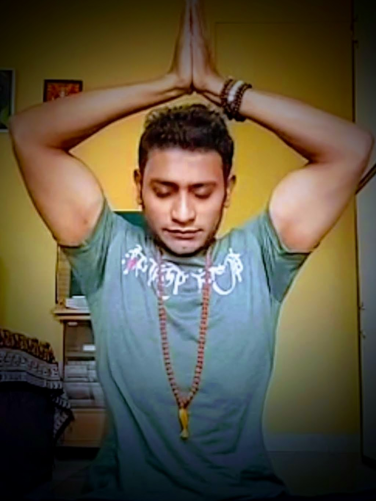
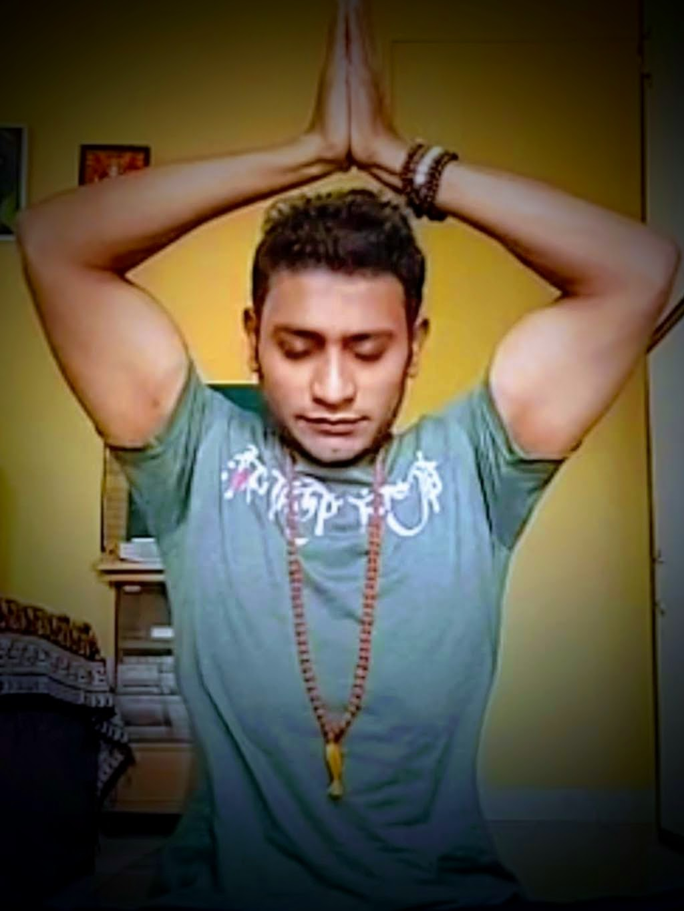

Yog Acharya & Ved Acharya Vishnu Vallabh
Dr. Kapil Kapadia
Registered Yoga Teacher (RYT 600) – Yoga Alliance Certified.
Specialised in Medical Yoga Therapy for hypertension, heart health and diabetes management.
A scholar of the Vedas & Puranas, bringing spiritual depth to physical practice with 12+ years of experience and over 2,000 students trained.
- Online & Offline Classes
- In-Studio & Home Sessions
- Personalised Guidance for Every Age
Gallery
 



Yoga is to purify our actions, Yoga is to control the mind and senses and Yoga is to link one-self to the supreme with devotion.
Contact Me
 WhatsApp
WhatsApp
 Instagram
Instagram